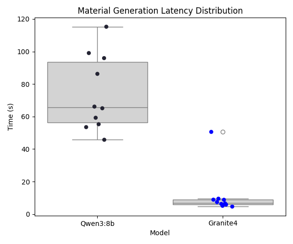
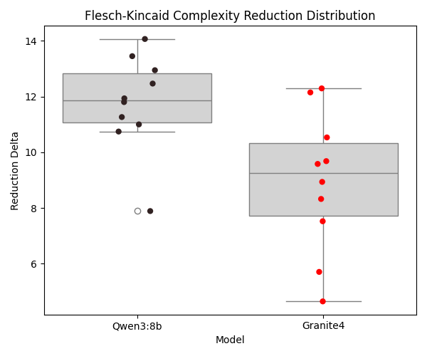
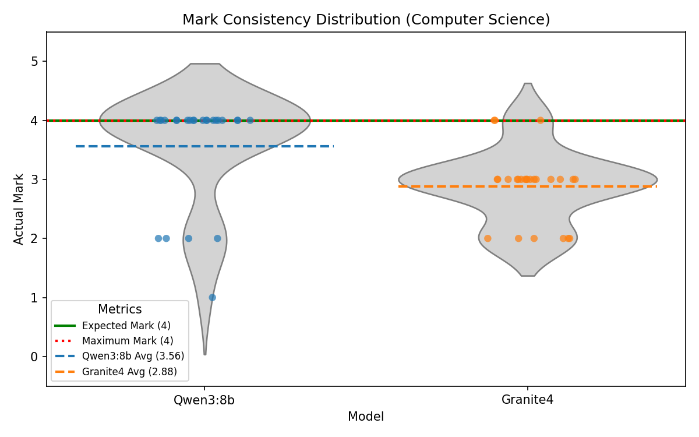
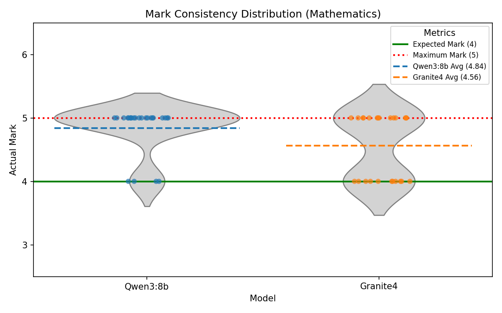
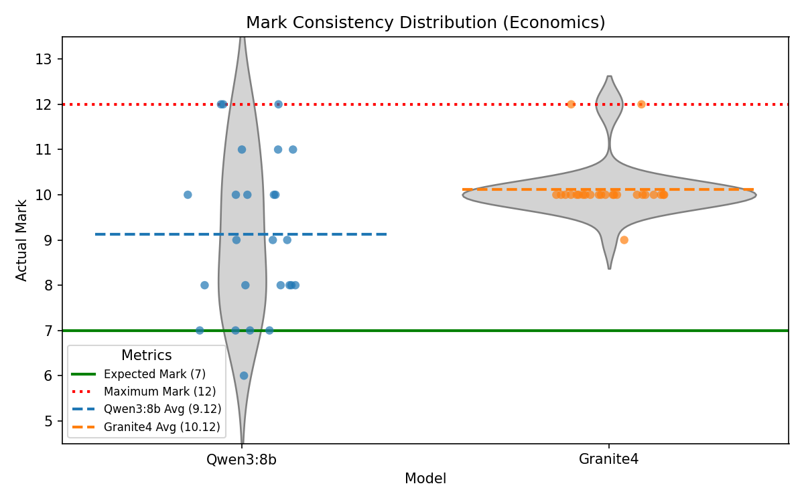
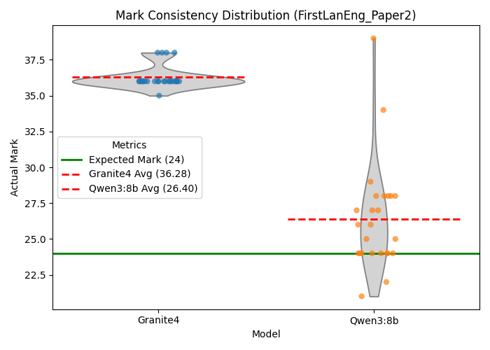

Evaluation
Critical assessment of requirements achievement, stakeholder validation, system quality, and future work priorities.
Requirements Achievement
The following table summarises the completion status of all MoSCoW requirements against what was delivered.
Functional Requirements — Must Have
| ID | Requirement | Status |
|---|---|---|
| MAT1 | The application must provide a Lesson Library to store, manage and organise all generated content. | ✓ |
| MAT2/MAT3A | The Lesson Library must be organised using the hierarchical structure of units, lessons, and materials. | ✓ |
| MAT4 | The application must include a search function for teachers to locate materials across all units and lessons. | ✓ |
| MAT5 | The application must allow a teacher to generate and store materials using one or more on-device GenAI models. | ✓ |
| MAT6 | When creating a new material, the application must prompt the teacher for the material type. | ✓ |
| MAT7 | When creating a new material, the application must prompt the teacher for a textual description of the expected content. | ✓ |
| MAT8 | When creating a new material, the application must prompt the teacher to upload zero or more source material documents. | ✓ |
| MAT12 | After creating a new material, the teacher must be able to modify and refine its contents via an editor. | ✓ |
| MAT15 | The application must allow the import and display of static images and PDF documents as lesson materials. | ✓ |
| MAT17 | When creating a new material, the system must provide a means for adjusting the text complexity and readability of the generated material. | ✓ |
| CON1 | The application must provide a continuously updated dashboard displaying aggregated and anonymised data. | ✓ |
| CON2A | The dashboard must include an overview of the individual statuses of each student tablet. | ✓ |
| CON3 | The dashboard must include a panel displaying the number of connected devices. | ✓ |
| CON5 | The dashboard must include a panel indicating devices which require attention. | ✓ |
| CON6 | The application must include a panel providing device-specific controls. | ✓ |
| CON7 | The dashboard must include a chart summarising students’ responses to quizzes or polls. | ✓ |
| CON8 | The dashboard must include a panel for launching and delivering a previously created material to all students. | ✓ |
| CON10 | The dashboard must support simultaneous differentiation for deployment. | ✓ |
| CON11 | The application must allow the teacher to export and save session data to a local file for offline tracking. | ✓ |
| CON12 | The dashboard must provide a visual alert when a specific student triggers a "Help" request. | ✓ |
| NET1 (Teacher/Student) | Distribute material content to at least 30 students’ tablets through the same LAN. | ✓ |
| NET2 (Teacher/Student) | Receive responses from student tablets over the LAN. | ✓ |
| ACC1 (Teacher) | The user interface must be intuitive for teachers with standard computer literacy. | ✓ |
| ACC2 (Teacher) | The teacher must be able to configure their application settings and preferences on their laptop. | ✓ |
| ACC3A (Teacher) | The teacher must be able to enable and disable accessibility features on a per tablet basis. | ✓ |
| SYS1 (Teacher) | The application must be compatible with both Intel and Qualcomm AI chipsets. | ✓ |
| SYS3 (Teacher) | The application must be packaged for distribution via the Microsoft Store. | ✓ |
| MAT1 (Student) | The application must be able to display all supported material types. | ✓ |
| MAT2B (Student) | The application must display feedback as configured by the teacher. | ✓ |
| MAT7 (Student) | The application must include a "Raise Hand" button. | ✓ |
| ACC1 (Student) | The application must support tapping, typing, and styluses. | ✓ |
| ACC3 (Student) | The application must include a text-to-speech button if enabled. | ✓ |
| ACC4 (Student) | The application must have a monochromatic display with minimal audiovisual stimuli. | ✓ |
| SYS1 (Student) | The application must be compatible with commercially available e-ink tablets. | ✓ |
| System 1-4 | The system must valid user inputs, display clear states, anonymise data, and support 30 concurrent low-latency connections. | ✓ |
Functional Requirements — Should Have
| ID | Requirement | Status |
|---|---|---|
| MAT13 | Each material should be associated with metadata such as deployment status and creation date. | ✓ |
| MAT18 | The application should provide the option to mark individual student responses manually or via AI. | ✓ |
| MAT19 | The application should provide an optional point system. | ⚠ |
| CON14 | The dashboard information should be split into two different tabs or sections. | ✓ |
| SYS4 | The system should support external devices such as reMarkable and Kindle through an alternative delivery workflow. | ✓ |
| MAT9A (Student) | Question feedback should identify correct parts of reasoning and guide towards the right answer. | ✓ |
| ACC5 (Student) | The application should include animated mascots or avatars to act as learning companions. | ⚠ |
Functional Requirements — Could Have
| ID | Requirement | Status |
|---|---|---|
| CON4 | The dashboard could include a panel displaying the average student’s progress. | ⚠ |
| SYS2 | The application could be secured through local user authentication. | ⚠ |
| ACC2 (Student) | The application could support eye gaze control via third-party hardware. | ⚠ |
✓ Delivered ⚠ Partially implemented or not completed within project timeline
Individual Contributions
System Artefact
| Work Packages | Raphael Li | Nemo Shu | Will Stephen | Priya Bargota |
|---|---|---|---|---|
| UI Design | 22.00% | 15.00% | 25.20% | 37.80% |
| Coding (Windows) | 40.00% | 60.00% | N/A | N/A |
| Coding (Android) | N/A | N/A | 76.00% | 24.00% |
| Testing | 23.00% | 30.00% | 27.00% | 20.00% |
| Overall Contribution | 20.80% | 27.50% | 34.00% | 17.60% |
Website Report
| Work Package | Raphael Li | Nemo Shu | Priya Bargota | Will Stephen |
|---|---|---|---|---|
| Requirements | 16.60% | 16.83% | 50.90% | 15.68% |
| Research | 100.00% | 0.00% | 0.00% | 0.00% |
| UI Design | 5.12% | 0.00% | 60.00% | 34.88% |
| System Architecture | 100.00% | 0.00% | 0.00% | 0.00% |
| Implementation | 1.92% | 42.30% | 20.37% | 35.41% |
| Testing | 0.00% | 27.17% | 21.24% | 51.59% |
| Evaluation | 0.00% | 94.58% | 4.32% | 1.10% |
| Appendices | 96.72% | 0.00% | 0.00% | 3.28% |
| Monthly Videos | 10.00% | 10.00% | 10.00% | 70.00% |
| Final Video | 10.00% | 10.00% | 10.00% | 70.00% |
Showcase Feedback and Stakeholder Validation
Following our demonstration at the showcase event, we received feedback from teachers, industry partners and academic reviewers that validated our approach and informed final implementation priorities.
| Feedback | Source | What We Implemented |
|---|---|---|
| "I'm really glad you've gone with Kindles rather than iPads. Distraction is definitely a big problem with full colour tablets and it's not really possible to lock a student into an app on an iPad. This is exactly the kind of tool teachers actually want." | Teacher | Committed fully to E-ink tablets. Implemented kiosk mode and designed the entire UI around a monochrome low-distraction experience. |
| "Auto-marking is really important, but teachers need control over it before it gets accepted as final. There should be an option to make it manual." | Teacher | Built a marking system where teachers review AI-suggested marks before finalisation, with manual override available for every response. |
| "Sometimes during a lesson a teacher likes to stop and get an understanding of where all students are. There needs to be a good way of doing this." | Teacher | Built a real-time dashboard with a colour-coded grid showing every student's status, plus poll and quiz response aggregation. |
| "A tag on each device would make it easier to identify. The device should not be able to change its alias, otherwise students could exploit this." | UCL Teaching Assistant | Added fixed device identification using a generated UUID that cannot be changed by the student, ensuring reliable tracking without compromising anonymity. |
Critical Evaluation
User Interface and User Experience
The teacher application received consistently positive feedback from all five teaching professionals who tested it. The hierarchical content library, cascading deployment dropdowns and colour-coded device grid were described as intuitive by testers with standard computer literacy. The clean separation between the Library, Classroom and Responses views reduces cognitive load for teachers managing a live lesson.
The Android student interface was deliberately minimal — large monochromatic text, a single persistent Raise Hand button, and no navigation chrome beyond what is necessary for the current task. This directly addresses the design principle established in C1 and aligns with what the teachers described as a key requirement. The interface has not yet been formally tested with students, which remains a significant gap.
Functionality
All Must Have functional requirements were delivered. Three of the six Should Have requirements were delivered in full, with the remaining three partially implemented. The AI content generation pipeline represents the strongest functional achievement — generating formatted worksheets and quizzes from source documents with no internet connection, running entirely on the teacher's laptop.
The teacher oversight model for AI feedback was a deliberate design decision validated by stakeholder feedback. Rather than sending AI-generated marks directly to students, the teacher reviews and approves each piece of feedback before it is delivered. This addresses the concern raised at the showcase that auto-marking without teacher control could undermine trust in the system.
AI Capabilities
The AI capabilities of Manuscripta were evaluated using the same production prompt-construction and parsing pathways used by the Windows application, rather than separate evaluation-only prompts. We run repeated iterations to capture expected non-determinism in LLM outputs. The experiments below compare Qwen3:8b and Granite4 under equivalent conditions.
Material Generation Latency
The material generation latency experiment measures end-to-end worksheet generation time while holding prompt inputs constant across models. In the test runs, the request uses the title "Newton's Laws AI Test" and the description "Create a short physics worksheet covering Newton's laws of motion with three separate draft questions placed inside the reading material.", with reading age set to 14, actual age set to 15, and target duration set to 30 minutes. The generated prompt follows the production structure of TASK, MATERIAL TITLE, MATERIAL DESCRIPTION, RESTRAINTS, MARKDOWN SYNTAX, and SOURCE DOCUMENT CONTEXT, and in this controlled experiment the source-context section is intentionally empty so that latency and format adherence can be compared directly. Each model is run for 10 iterations and we record timing variance alongside format checks such as question-draft marker emission.

Granite4, as a lighter model, demonstrates lower average generation latency than Qwen3:8b. However, Qwen3:8b remains the primary model because the quality-focused experiments show stronger instruction adherence and overall output reliability.
Content Modification
The content modification experiment evaluates whether the assistant can simplify complex prose while preserving key scientific entities. The fixed original content is "The mitochondria is the indubitable powerhouse of the cellular micro-organism. It orchestrates adenocine-triphosphate synthesis." and the exact instruction is "Simplify terminology for an 8 year old". The production prompt is generated with material type "reading", title "Cellular Biology", reading age 8, and actual age 8, again using an empty source-context section for controlled comparison. Both models are run for 10 iterations, and the chart reports Flesch-Kincaid reduction per run while entity preservation is checked explicitly (for example, retention of "mitochondria").

Both models generally retain required entities, but Qwen3:8b shows stronger simplification quality for the target reading level, reflected in a larger average complexity reduction.
Auto-Grading & Feedback
The auto-grading and feedback experiment assesses marking alignment and output-format compliance using CAIE example candidate responses spanning Computer Science, Mathematics, Economics, and First Language English. For each response, the production feedback prompt is used with the task wording "Generate constructive feedback for a student's response to the question given below.", and when a maximum score is present the model is instructed to begin with a strict "MARK: X" line before the feedback body. The prompt then includes QUESTION, STUDENT'S RESPONSE, MARK SCHEME, and Maximum Score sections, with requirements for evidence-based marking, full-range score readiness, student- facing constructive language, British English, and no markdown or HTML. Each response is evaluated three times per model to capture variance, and the table reports over-marking, exact matches, under-marking, and normalised score ratio.
| Subject | Model | Number of Qs | % Overmarked | % Exact | % Undermarked | Average Score Ratio |
|---|---|---|---|---|---|---|
| CompSci | Qwen3:8b | 45 | 20.0% | 57.8% | 22.2% | 1.06 |
| CompSci | Granite4 | 45 | 35.6% | 33.3% | 31.1% | 1.20 |
| Maths | Qwen3:8b | 21 | 42.9% | 47.6% | 9.5% | 1.19 |
| Maths | Granite4 | 21 | 81.0% | 19.0% | 0.0% | 1.98 |
| Economics | Qwen3:8b | 18 | 55.6% | 11.1% | 33.3% | 1.33 |
| Economics | Granite4 | 18 | 77.8% | 22.2% | 0.0% | 1.75 |
| English | Qwen3:8b | 18 | 61.1% | 0.0% | 38.9% | 1.06 |
| English | Granite4 | 18 | 100.0% | 0.0% | 0.0% | 1.66 |
Qwen3:8b consistently outperformed Granite4 in grading alignment across both exact-science and subjective-response subjects. Granite4 showed a stronger tendency to over-mark in tighter mark-scheme settings, while Qwen3:8b remained closer to expected examiner baselines.
Auto-Grading Consistency
To quantify non-determinism directly, a fixed response was re-marked 25 times per model for one selected question in each subject using the same production feedback prompt and parser. The plots below show mark distributions per item, making variance and central tendency visible relative to the expected baseline mark.




Discussion
Overall, the experiments demonstrate that the decision to use Qwen3:8b as the primary AI model for Manuscripta is well-justified. It outperforms Granite4 in most measured metrics except for latency of generation. We believe the trade-off in speed is reasonable given the significant improvement in average score ratio and instruction-following during modification, with material generation completed within 2 minutes on a Nvidia RTX 4050. However, the larger inconsistency in mark distribution for Qwen3:8b in questions with high maximum marks is a concern that needs to be addressed in future work.
More about Evaluation Tests
Interested readers may access the evaluation tests here: Manuscripta AI Evaluation Tests.
Compatibility
Manuscripta's local LLM models are powered by Ollama, which supports a wide range of GPUs manufactured by NVIDIA, AMD, and Apple. This allows teachers to run Manuscripta on their own devices without cloud dependencies. However, support for Intel and Qualcomm NPUs is planned for the future, which is expected to broaden the range of devices that can run Manuscripta locally.
The dual delivery method — Android app over Wi-Fi and cloud-based PDF for non-Android devices — ensures the system is not restricted to a single hardware ecosystem. This makes Manuscripta deployable in schools with mixed E-ink device inventories without requiring hardware standardisation.
Maintainability
The Android application follows Clean Architecture with strict separation of data, domain and presentation layers, enforced by the CI pipeline which requires 95% unit test coverage on every pull request. The 126-test, 33,532-line combined test suite provides a strong regression safety net.
The Windows application uses a centralised RuntimeDependencyManager for AI dependencies, meaning new models or tools can be added without duplicating management logic. Strict separation of layers and persistence and cascading rules are also defined.
Project Management
The team used GitHub Issues and pull requests for task tracking, with conventional commit messages and path-based CI/CD separating Android and Windows workflows.
The interaction between the Windows and Android applications is standardised through team-wide specifications, including the API Contract, Validation Rules for Data Models, Pairing and Session Interaction specifications. Designing specifications up-front significantly reduced the need for unnecessary iterations and improved the efficiency of the development process.
Furthermore, the Windows application uses strict specification-anchored development process, where specifications, written in legal style, are maintained as a self-consistent system along with the codebase, and any implementation must be based on the specifications. This streamlines implementation agents and review agents in the AI-assisted development process, ensuring alignment between the generated code and the intent.
Known Limitations
- Kiosk mode requires MDM provisioning for full enforcement, so students on unmanaged devices could potentially exit the app.
- AI generation is significantly slower on CPU-only hardware, so generation time may be impractical on older school laptops.
- No formal student user testing has been conducted, so effectiveness for learners is validated by proxy through teacher feedback and NAS domain expertise rather than direct student testing.
- Thirty-device simultaneous distribution has not been load tested, so full classroom-scale performance is not yet validated.
- Text-to-speech is not fully delivered, so students cannot have content read aloud in the current version.
- Kiosk mode is not fully delivered on Android, so students can potentially navigate away from the app.
- There is no response submission mechanism for external devices, so students cannot submit responses from non-Android devices.
- There is currently no way to select which Windows teacher application to connect to when multiple teachers are broadcasting on the same LAN, so the Android client may connect non-deterministically.
- The editor modal can fail to save content when a user inserts LaTeX into a table.
Future Work
Priority 1 — Student user testing
The most significant gap in the project is the absence of formal testing with students. Conducting a structured classroom trial would provide direct evidence of the system's effectiveness for the target user group and identify usability issues that teacher testing cannot surface.
Priority 2 — Performance validation at scale
Load testing with 30 simultaneous devices on a standard school Wi-Fi network would validate the non-functional requirements that were specified but not measured. This would also identify any bottlenecks in the TCP distribution pipeline under realistic classroom conditions.
Priority 3 — Further AI output quality evaluation and tuning
Whilst the AI output quality was evaluated in the AI Evaluation section, further evaluation and tuning on factual accuracy, reading level adherence and instruction-following would allow the system to be deployed with greater confidence in a real classroom. Furthermore, feedback generation should be tested on a wider range of tasks that go beyond past-paper questions, and resolving the systematic tendency of over-marking should be a priority.
Priority 4 — Complete should-have features
Text-to-speech and vocabulary highlighting were identified as should-have requirements and partially implemented. Completing these would meaningfully improve the system's accessibility and teacher utility.
Priority 5 — Handwriting recognition and full external device integration
Identified during the second stakeholder meeting with Dean Mohamedally and validated by Atia Rafiq's professional workflow, handwriting recognition for returned PDFs remains the most technically ambitious undelivered requirement. This would unlock response submission and fully automated marking for non-Android devices.
Priority 6 — Microsoft Store packaging
The Windows application was specified to be distributed via the Microsoft Store. The Squirrel installer infrastructure is in place. Completing the Store submission process would make the system accessible to schools without requiring manual installation from a developer build.